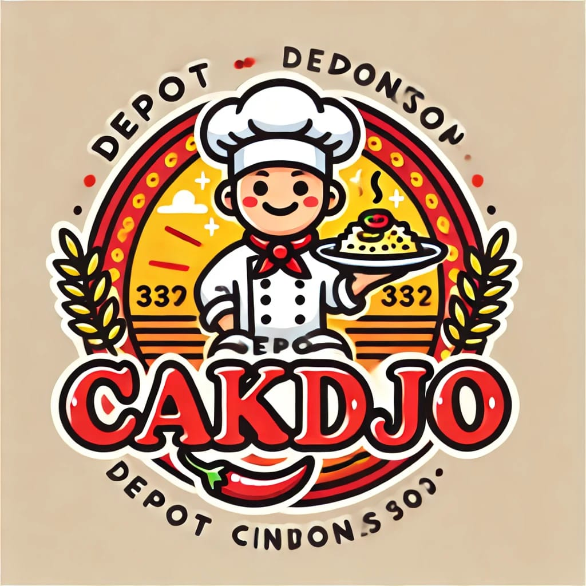

DEPOT CAKDJO
SAMBELAN
Ayam kampung paha
Rp. 25.000
Ayam kampung dada
Rp. 25.000
Ayam paha
Rp. 25.000
Ayam dada
Rp. 25.000
Bebek paha
Rp. 25.000
Bebek dada
Rp. 25.000
Lele goreng
Rp. 25.000
Belut goreng
Rp. 25.000
Ati Rempelo goreng
Rp. 25.000
Cumi goreng tepung
Rp. 25.000
Udang goreng tepung
Rp. 25.000
Tempe goreng
Rp. 25.000
Tahu goreng
Rp. 25.000
Jamur krispi
Rp. 25.000
Nasi putih
Rp. 25.000
MENU PAKET SPESIAL PEDAS
PAKET 1
Rp. 45.000
Sepiring nasi, lauk - pauk, sayur tumis, sambal pedas Spesial, Minuman dingin dan Buah Segar.
PAKET 2
Rp. 55.000
Dua piring nasi, lauk - pauk, sayur tumis, sambal pedas Spesial, Minuman dingin dan Buah Segar.
PAKET 3
Rp. 60.000
Empat piring nasi, lauk - pauk, sayur tumis, sambal pedas Spesial, Minuman dingin dan Buah Segar.
PAKET 4
Rp. 65.000
Empat piring nasi, lauk - pauk, sayur tumis, sambal pedas Spesial, Minuman dingin dan Buah Segar.
MINUMAN
Es teh
Rp. 5.000
Es Jeruk
Rp. 5.000
Es soda gembira
Rp. 8.000
Es gula
Rp. 5.000
Es susu coklat
Rp. 5.000
Jus Semangka
Rp. 5.000
Jus Melon
Rp. 5.000
Jus Alpukat
Rp. 5.000
Teh Hangat
Rp. 5.000
Jeruk hangat
Rp. 5.000
Susu coklat hangat
Rp. 5.000
Buah potong campur
Rp. 8.000
Buah potong yoghurt
Rp. 8.000
Es Teler Durian
Rp. 8.000
Es Campur
Rp. 18.000
NASI GORENG
Nasi Goreng Spesial
Rp. 40.000
Nasi Goreng Jawa
Rp. 25.000
Nasi Goreng Seafood
Rp. 35.000
Nasi Goreng Mawut
Rp. 25.000
Nasi Goreng Buto Ijo
Rp. 25.000
MIE & BAKSO
Bakmie Goreng
Rp. 25.000
Mie Ayam
Rp. 25.000
Bakso Jumbo
Rp. 30.000
Bakso Spesial
Rp. 27.000
089-636-866-683
@DJVN_09